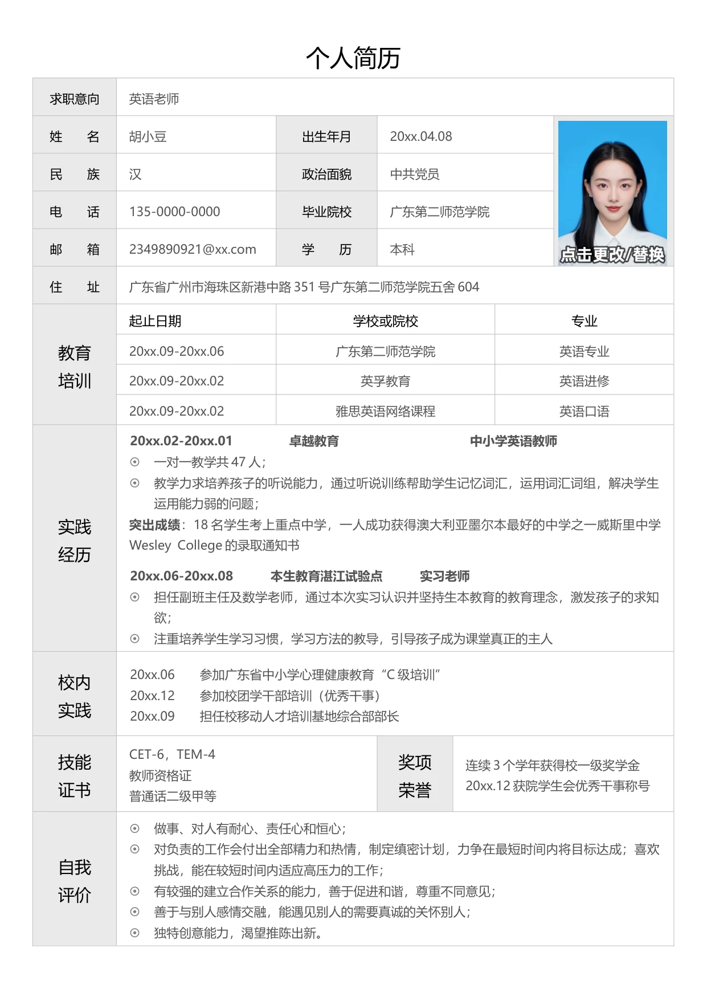

个人简历
求职意向
英语老师
姓 名
胡小豆
出生年月
20xx.04.08
民 族
汉
政治面貌
中共党员
电 话
135-0000-0000
毕业院校
广东第二师范学院
邮 箱
2349890921@xx.com
学 历
本科
住 址
广东省广州市海珠区新港中路351 号广东第二师范学院五舍604
教育
培训
起止日期
学校或院校
专业
20xx.09-20xx.06
广东第二师范学院
英语专业
20xx.09-20xx.02
英孚教育
英语进修
20xx.09-20xx.02
雅思英语网络课程
英语口语
实践
经历
20xx.02-20xx.01 卓越教育 中小学英语教师
一对一教学共47 人；
教学力求培养孩子的听说能力，通过听说训练帮助学生记忆词汇，运用词汇词组，解决学生
运用能力弱的问题；
突出成绩
：18 名学生考上重点中学，一人成功获得澳大利亚墨尔本最好的中学之一威斯里中学
Wesley College 的录取通知书
20xx.06-20xx.08 本生教育湛江试验点 实习老师
担任副班主任及数学老师，通过本次实习认识并坚持生本教育的教育理念，激发孩子的求知
欲；
注重培养学生学习习惯，学习方法的教导，引导孩子成为课堂真正的主人
校内
实践
20xx.06 参加广东省中小学心理健康教育“C 级培训”
20xx.12 参加校团学干部培训（优秀干事）
20xx.09 担任校移动人才培训基地综合部部长
技能
证书
CET-6，TEM-4
教师资格证
普通话二级甲等
奖项
荣誉
连续3 个学年获得校一级奖学金
20xx.12 获院学生会优秀干事称号
自我
评价
做事、对人有耐心、责任心和恒心；
对负责的工作会付出全部精力和热情，制定缜密计划，力争在最短时间内将目标达成；喜欢
挑战，能在较短时间内适应高压力的工作；
有较强的建立合作关系的能力，善于促进和谐，尊重不同意见；
善于与别人感情交融，能遇见别人的需要真诚的关怀别人；
独特创意能力，渴望推陈出新。